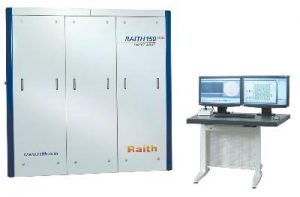
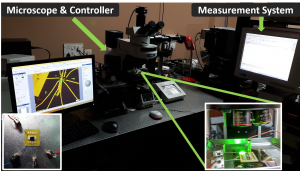
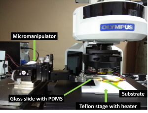
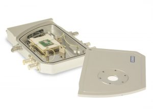
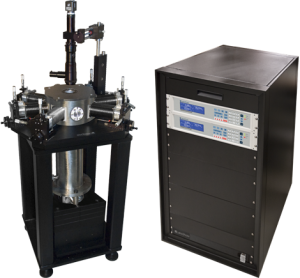
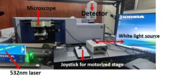
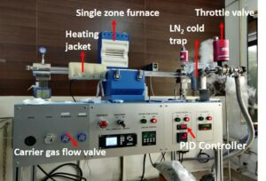

Most of the device fabrication and characterization is carried out at the IITB Nano Fab facility. Some specialized equipment and setups have been purchased/developed by our group.

(A) IITB Nano Fab (Website)
We use this facility extensively for device fabrication and materials characterisation.
- Electron Beam Lithography
- Optical Lithography
- Deposition tools – Sputter, Thermal/E-beam Evaporators, ALD
- Plasma Ashing
- RIE
- High-Resolution XRD
- XPS
(B) Optical Characterization Setup:

- NKT Photonics SuperK supercontinuum laser with spectral output range of 390-2400 nm
- Coherent OBIS 532 and 633 nm, 100 mW lasers
- Newton 970 Scientific Camera DU970P-BVF EMCCD
- Neutral density filters with optical densities ranging from 0.1 to 5
- Olympus BX-63 microscope
- Agilent function generator
- Agilent four-channel digital oscilloscope with 4 GHz bandwidth
- Dual-bandwidth 3 MHz/500 kHz current probe for high-speed switching measurements
- Agilent B1500A SMU
(C) 2D Materials heterostructure transfer setup:

Consists of an Olympus BX 63 upright microscope, micromanipulator head, Thorlabs heater unit. A teflon stage with a heating unit is mounted on the microscope stage.
- A glass slide with the PDMS stamp (which contains the flake to be transferred) is attached to the micromanipulator head
- Typically, 20X or 50X long working distance objectives are used for the flake transfer process
- Flakes are transferred by bringing the PDMS stamp in close contact to the desired substrate or another flake and heating to 60 ºC.
- Alignment accuracy of +/- 4 micron and flakes of size 5-10 micron easily transferred.
- Organic-residue free process.
(D) Gas sensing setup:

We have a high-precision gas sensitivity measurement setup.
- Airtight leakproof sensing setup for safety of the lab personnel
- Custom analyte gas mixtures possible
- Precise variation in gas concentration ranging from 0.5 PPM to 1000 PPM
- Linkam Stage for device probing and measurements
- High-Resolution Agilent B1500A for electrical measurements
- Measurement at different temperatures ranging from -196 to 420 °C possible
(E) Cryogenic probe station:

Features of the Model CRX-4K Probe Station:
- Cryogen-free operation
- Allows unsupervised cool down
- Low-temperature operation
- Minimize sample condensation during cool down
- Using a self-contained closed cycle refrigerator (CCR), the CRX-4K will cool down to cryogenic temperatures unassisted, eliminating the need for monitoring by the researcher.
- All standard CV and IV measurements can be performed on this versatile probe station.
- Maximum sample size: 2inch x 2inch
- Maximum no of probes: 4 probes, only dc measurement
- Operating temperature range: 4.5K to 290K
- Allowed temperature range: 290K to 77K. (Below 77K special permission is required from FIC)
- Control stability:< 20K: +/- 50mK , 20K to 290K: +/- 20mK
(F) LabRAM HR Evolution Raman System

This system is used for Raman spectroscopy and micro-PL measurements.
- Applications: Raman-PL (point measurement and mapping), temperature and bias-dependent Raman-PL
- Detectors: Air cooled (-60 °C) Syncerity CCD-1, Liq. N2 cooled (-110 °C) InGaAs line symphony CCD-2
- Software: Labspec6
-
Gratings: 1800 g/mm, 600 g/mm
-
Wavelength: 532 nm
-
Temperature Control: Linkam temp. controlled stage. Temp. range from (-196 °C) to (400 °C)
(G) planarGrow-2M 2-inch CVD Furnace

Features of the planarGrow-2M 2-inch CVD system:
- Single zone furnace connected to PID heater controller
- Heating jacket connected to digital temperature controller
- LN2 cold trap
- Gases used: Ar, N2, FGA, H2 (100 %), H2S (100 %).
- Materials: 1L WSe2 flakes, few-layer MoS2 flakes, wafer scale MoS2 film (1 cm x 1 cm).
(H) Computational Facilities:
Atomistic modeling and quantum transport calculations are carried out using the software package ‘Synopsys_ QuantumATK’.
- QuantumATK+ NEGF Academic License
- In-house quantum ballistic simulator (QBS)
- High end servers:
- Intel Xeon E5 2650V3 processor / 2 × 10 core 2.3GHz /8 × 16GB DDR4 ECC Reg. RAM
- Intel Workstation bare bone system / 2 × 8 core 2 to 2.8 GHz / 12 × 8 GB DDR3 1600 MHz RAM